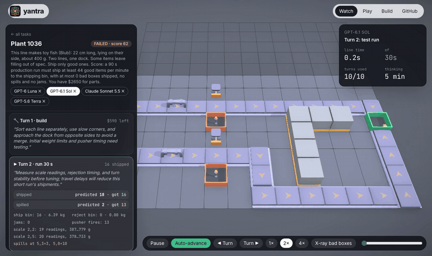

Training agents to find what the physics is hiding
A MuJoCo environment where an agent must infer hidden friction, actuator latency and sensor noise from its own experiments, then tune a physical system that has to work on a run it has never seen.
GPT-6.1 Sol predicted its last test run exactly: 92 boxes shipped, and 92 shipped. It handed the line over. In the scored run on a fresh seed it shipped 93 good boxes and one underweight one, so the level counted as a fail.
Sol was the strongest model we tested, and this was one of its better episodes. It found the defect in the scale data, worked out why its reject pushers were missing, fixed both and verified the result. What it did not do was leave enough margin for measurement noise it had already seen. This post explains the environment that produced that failure, the capability it is meant to train, and what four models did in it.
§1The capability
A robot policy can be very good at following a trajectory and still fail on a real cell. The belt is slicker than expected, a gripper valve lags by 40 ms, or a load cell drifts. Today a person closes that gap: they commission the cell. They run it, watch where it goes wrong, infer the parameter that is off, adjust speeds, timings and thresholds, and run it again until it holds.
That job sits above the low-level controller, and it is the capability Yantra is built to train and measure. We break it into four parts:
- System identification. Infer unobserved physical parameters (friction, latency, noise, defect distributions) from the outcomes of your own actions.
- Forward prediction. Before each experiment, say what will happen. A model that can't predict its own test run doesn't understand the system it built.
- Design for margin. Pick settings that will work under conditions you haven't sampled, not just the ones you tested.
- Verification. Don't ship a configuration you never ran.
Each part can be measured separately from the episode traces. The results in §6 measure each one.
§2The environment
Every Yantra level is a MuJoCo world with two kinds of parameters. Visible ones are what the agent builds and sets: layout, part positions, speeds, thresholds, timings. Hidden ones are drawn per level and never shown: surface friction μ, actuator speed and valve delay, sensor noise σ, and the distribution of what the input produces. In RL terms each level is a POMDP whose transition function depends on a latent θ, and θ changes from level to level. That is domain randomisation, with the agent responsible for working out which domain it landed in.
The agent works through tools. A world exposes a few, each typed, and any tool that runs the physics needs a numeric prediction first. Episodes have budgets for turns, simulated test time and money. A terminal tool ends the episode and triggers a scored run on a seed the agent never saw, so tuning to its own test seeds doesn't pay. That held-out run plays the same role as deployment after sim training.
The same core runs three worlds so far: a cube lab (probe identical-looking cubes, then make one flick), a bottling line (checkweigher plus reject pusher), and a factory floor on a grid, which is the largest and is what most of this post covers.

The factory world
The floor is a grid of 0.5 m cells with walls, one or two inlets, and a shipping dock. The agent places belts, scales, pushers and bins using a small build language with costs attached, runs the line for 10 to 90 simulated seconds, and gets a report: bin counts and weights, spills and jams by cell, every scale reading, and every pusher firing. To pass, the 90 s production run must reach a throughput target with zero bad items shipped, zero spills and zero jams.
Levels come in three tiers. Tier 1 is routing at speed. In tier 2 the inlet sends some items out of spec, and the brief doesn't say in which direction. In tier 3 two lines with different defects merge into one dock. Some lines carry toys instead of boxes: a rubber duck, a fish, and a cow that stands on four legs.
§3Where the difficulty comes from
No rule in the code says an item spills. Spills, jams and misreads come out of contact dynamics at 250 Hz. Two mechanisms do most of the work, and both carry over directly to robotics.
Friction-limited drive, applied at the contact
A belt pushes each item toward belt velocity, but the force it can apply is capped by friction. It also acts at the item's base, not at its centre of mass:
Two consequences follow. At a turn, an item has to lose its whole velocity component along the old direction at no more than μg, so it slides about $v_b^2/2\mu g$ before it is moving the new way. With μ unknown, the safe speed is something the agent has to find out. And a tall item tips when the capped force's torque beats gravity's restoring torque.
Sensors read physics, with noise
A scale is a separate body, and its reading is the contact force MuJoCo computes on it, averaged while the item sits fully on the platform. Noise is added, and it shrinks the longer the item stays on the platform:
This sets up the trade-off at the centre of tiers 2 and 3. Running the belt faster raises throughput but makes each weight noisier. If items are packed too close, two of them share the platform and read as one heavy item, because the contact forces simply add. Pushers have the same structure: the paddle fires after a hidden valve delay and moves at a hidden speed, so the trigger offset has to lead the item by about $v_b(\tau + s/v_p)$, and neither τ nor $v_p$ is given.
§4Levels that are solvable by construction
Random physical levels are often impossible or trivial, so a generator alone isn't enough. Each generated level is solved before it's kept. The generator routes a reference factory itself, using Dijkstra with a turn penalty because every turn is a place momentum can throw an item. On tiered maps it places a scale, a gap and a pusher on a straight run. Then it grid-searches speeds, thresholds and pusher timing against the true θ in full physics. If no configuration passes, the level is discarded.
The reference build knows θ and the agent doesn't, so the agent gets slack. The throughput target is 90% of the reference's, the money cap is 1.3× its cost, and the brief only says items may be "out of spec". A third of generated levels are held out. Their layouts and replays are never published, only their scores. For RL this means an unlimited supply of levels, each with a known-feasible solution and a difficulty tier you can build a curriculum from.
§5One episode, step by step
Here's what system identification looks like when it works. In this level, 30% of boxes leave the filler about 100 g light. Sol isn't told that, and it isn't told the scale's noise level either.
"The 900 g cutoff appears to let underfilled boxes near 920 g ship. Raise it to 950 g, between those readings and the good-box cluster."
Each change is driven by evidence from the previous run, and the final threshold leaves room for noise. That last part is what Sol skipped on the level in the opening, where it stopped at a cutoff that had held in two tests.
§6Results
We ran four models on 29 levels: 12 hand-built and 17 generated, 4 of them held out. Each model played each level once. GPT models ran through codex exec in a read-only sandbox with an empty working directory, and any tool use flagged the episode. Claude ran through claude -p with all tools disabled. Both answered in a strict JSON action schema.
| Model | Passed | Tier 1 | Tier 2 | Tier 3 | Held-out | Mean score |
|---|---|---|---|---|---|---|
| GPT-6.1 Sol | 22/29 | 10/10 | 9/12 | 3/7 | 4/4 | 48 |
| Claude Sonnet 5.5 | 19/29 | 10/10 | 6/12 | 3/7 | 4/4 | 31 |
| GPT-6 Luna | 11/29 | 9/10 | 1/12 | 1/7 | 2/4 | 14 |
| GPT-5.6 Terra | 9/29 | 6/10 | 2/12 | 1/7 | 2/4 | −2 |
Score = good items shipped in the 90 s production run − 5 per bad item − 2 per spill − 3 per jam. Pass requires throughput ≥ target and zero bad items, spills and jams.
Routing is mostly solved: 35 of 40 tier-1 attempts passed. Once items have to be measured and sorted, pass rates drop to 18 of 48 in tier 2 and 8 of 28 in tier 3. The rest of this section maps the failures onto the four capabilities from §1.
Verification: the largest single effect
Agents that tested their final configuration passed 56 of 82 times (68%). Agents that changed something after their last test passed 5 of 34 times (15%). Some of this is selection, since an agent that runs out of turns can't test. But the traces show where the missing turn went: earlier turns spent on guesses, then a final change that's judged "should be safe" and handed over. Terra's Rush Hour run is the clearest case (§7).
Forward prediction tracks competence
Every test run requires a prediction of items shipped and spilled. Over an episode, the error measures how well the model understands the system it built:
| Model | Test runs | Median miss, items shipped | Passed |
|---|---|---|---|
| GPT-6.1 Sol | 87 | 3 | 22 |
| Claude Sonnet 5.5 | 65 | 4 | 19 |
| GPT-6 Luna | 77 | 10 | 11 |
| GPT-5.6 Terra | 72 | 12 | 9 |
The ordering is the same as the leaderboard, and it holds within episodes too. In episodes that passed, the median miss on the last test run was 2 items; in failed episodes it was 7.5. Prediction error needs no labels and is available at every step, which makes it a natural auxiliary reward or early-stopping signal for training.
Quality fails in two different ways
Spills and jams are motion problems, and the stronger models mostly solved them. Quality failures, where a bad item reaches the dock, split into two kinds when you look at how many bad items shipped:
- The station never worked (8 to 30 bad items shipped). This covers all 10 of Sonnet's quality failures and 3 of Sol's. The threshold was on the wrong side of the defect cluster, or the pusher fired but didn't move the box. This is a failure of system identification: the agent never correctly worked out which items were bad or how its actuator behaved.
- The station worked, but without margin (exactly 1 bad item). This is 2 of Sol's 5, including the opening example. The agent identified the system correctly and set a threshold that had held in testing, but too close to a distribution it had already sampled.
The first kind shrinks as models get better at experiment design. The second needs something different: reasoning about tails and sample size, and deliberately trading a little throughput for safety. That is §1's capability 3, and none of the four models did it consistently.
§7Three traces
Sol · mixed_merge-2 FAIL · score 88
The diagnosis was right, including the hard part: the pushers were firing, but the paddles weren't staying in contact long enough to move the boxes off. What it missed was margin. Its last two tests shipped about 120 items, and the production check allows zero escapes. A threshold that let none through in 120 samples can still let one through in the next 90.
Terra · rush_hour-1 FAIL · score −198
Terra changed a parameter before finding the cause (t5), then found the real bug two turns later. That left one turn. It had just missed its spill prediction by 67 items, and it used the last build to change every belt speed at once, knowing it couldn't test the result. The early guess at t5 cost the turn it needed at the end.
Sonnet vs Sol · tight_spec-3 SONNET PASS · 59SOL FAIL · −57
The same level: a narrow spec band and 10 turns. The two models took opposite approaches.
Sonnet reasoned about geometry and timing (where the flag happens relative to the paddle line) and changed one or two parameters per test, so each result told it something. Sol changed four parameters at once, couldn't attribute the spill to any of them, and kept moving the station. Neither tested its final change: Sonnet's handover was one of only five untested ones in the whole set that passed. One-variable-at-a-time testing isn't taught anywhere in the prompt, and the models that did it did better.
§8As a training environment
We haven't trained on Yantra yet; that's the next milestone. It was designed for training from the start, though:
- Reward that can't be gamed. The terminal reward is the production score on an unseen seed. Overfitting test runs doesn't pay, and there is no judge model to exploit.
- Dense auxiliary signal. Prediction error comes at every test run with no labels, and it correlates with final success (2 vs 7.5 items).
- Domain randomisation built in. θ is drawn per level, so a policy has to learn to identify the plant, not memorise one.
- Curriculum. Three tiers, each level with a reference solution and known slack.
- Throughput. A 90 s production run simulates in about 5 s on one CPU core. Episodes are deterministic given (layout, θ, seed), so any trajectory can be replayed exactly.
- Baselines. In the cube lab, a neural posterior estimator (PyTorch sbi) that picks probes by expected information gain solves 91 of 100 held-out levels. A scripted Bayesian agent solves 90 and random probing solves 20. GPT-6.1 Sol solved 26 of 30 dev levels. Explicit belief tracking is still the bar an LLM agent has to clear.
The first experiment we plan is a small open model trained with the terminal reward plus a calibration bonus, evaluated only on held-out levels. Next comes a robot-arm part for the factory, so pick-and-place with unknown grasp friction and payload becomes one more component the agent has to identify and tune.
§9Stack
| Layer | What |
|---|---|
| Physics | MuJoCo 3 (Python), 4 ms step, elliptic friction cones; items built from analytic primitives with explicit inertia |
| Core | yantra.core: components with visible and hidden params, typed tools with predictions, named budgets, episode event stream. Each world is a pack on top. |
| Browser | MuJoCo compiled to WebAssembly in a Web Worker; a line-by-line TypeScript port of the engine; shared mulberry32 RNG and op order. Bit-identical to the Python scorer for boxes, ducks and fish. |
| Viewer | React Three Fiber; replays at 6 fps in integer mm, interpolated (lerp/slerp) on playback; 141 MB → 53 MB for the suite |
| Audio | Rust engine (PyO3 + WASM) synthesising tap sounds from FEM vibration modes, for the cube lab |
| Agents | Codex CLI (sandboxed, with taint detection) and Claude CLI (no tools), both returning JSON validated against a schema generated from the tool specs |
| Tooling | uv, pytest, Playwright for visual checks |
The hardest part to get right was parity. Native and WASM MuJoCo differed in the last bit of mesh inertia and ellipsoid contacts, and over a 90 s run that grew into different outcomes. Replacing meshes with analytic primitives fixed it for every item except the cow. Its tipping is chaotic enough that last-bit differences still sometimes change the run, and we document that rather than hide it.
§10Limitations
- One episode per model per level. Differences of two or three passes are within noise. The verification and calibration effects are large enough not to be.
- Four held-out levels is too few to make strong claims about generalisation.
- GPT-6 Luna ran no-op shell commands (true, pwd) in 20 of 29 episodes. They could read nothing, so we counted the episodes and flagged them.
- The factory is a stylised plant. Friction, latency and noise are modelled; belt wear, compliance and electrical faults are not.